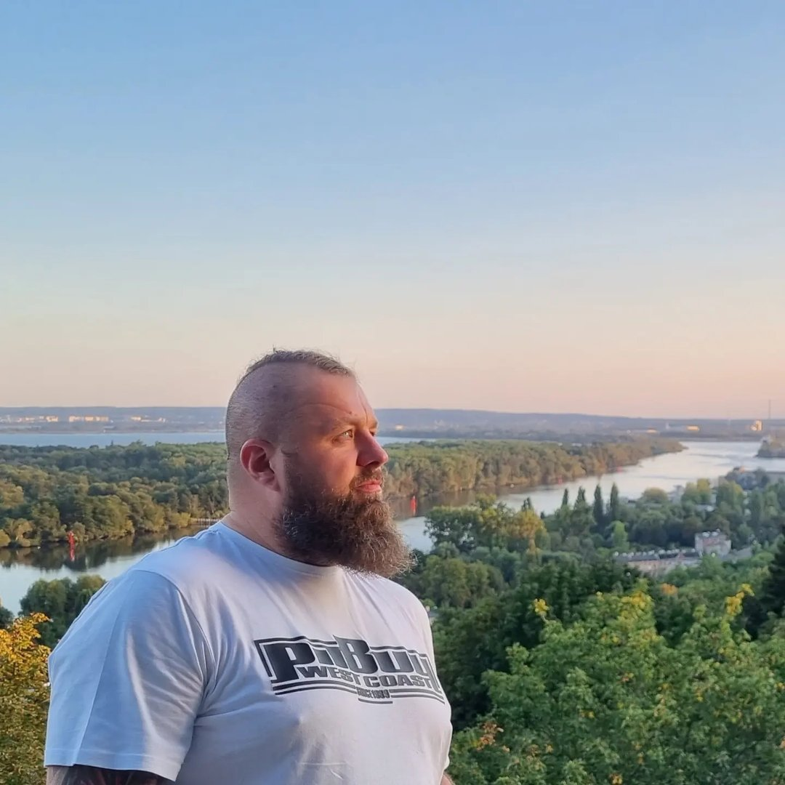
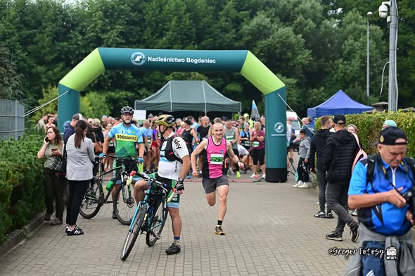
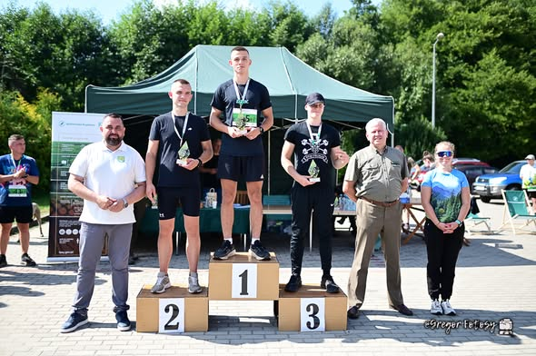
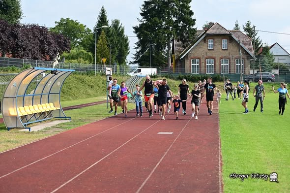
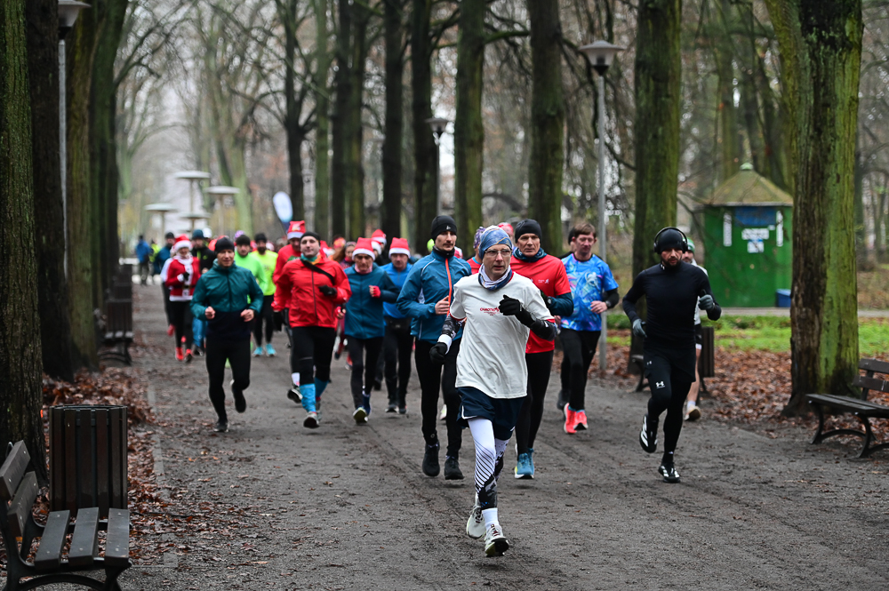
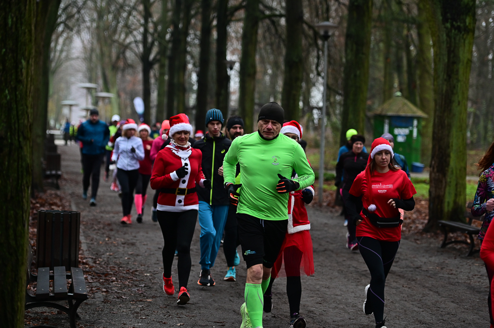
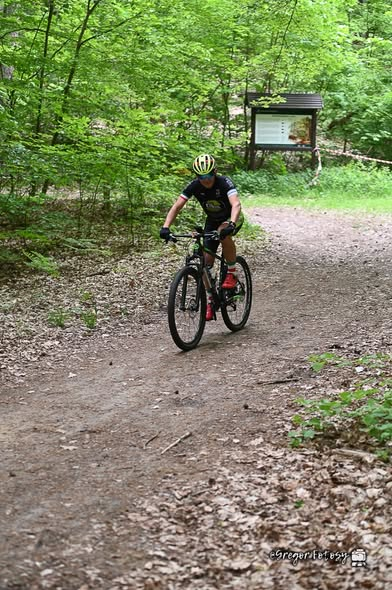

Nazywam się Grzegorz i jestem fotografem, który uwielbia zatrzymywać w kadrach najpiękniejsze chwile życia. Tworzę zdjęcia pełne emocji, naturalności i autentyczności – od kobiecych sesji pełnych ciepła, przez subtelne portrety, aż po wyjątkowe reportaże ślubne. Dla mnie fotografia to coś więcej niż tylko obrazy – to historie, które można przeżywać na nowo za każdym razem, gdy się na nie patrzy. Uwielbiam uchwycać prawdziwe uczucia, spontaniczne uśmiechy i te małe, ulotne chwile, które często umykają w codziennym biegu.





